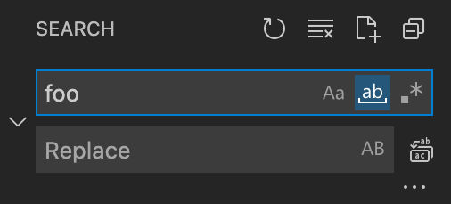
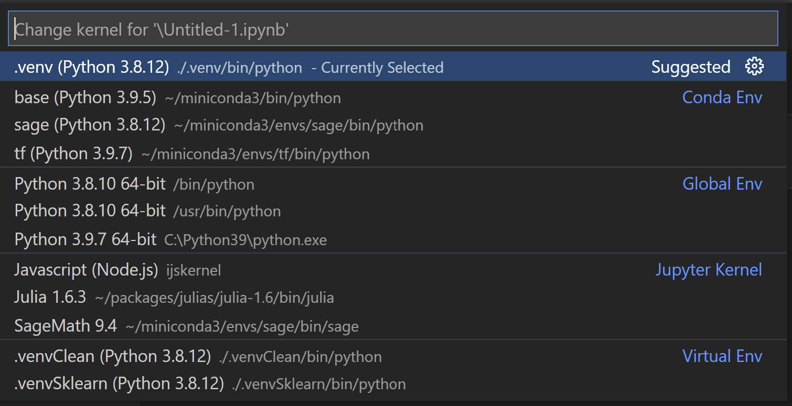

October 2021 (version 1.62)
Update 1.62.1: The update addresses this security issue.
Update 1.62.2: The update addresses these issues.
Update 1.62.3: The update addresses these issues.
Downloads: Windows: User System Arm64 | Mac: Universal Intel silicon | Linux: deb rpm tarball Arm snap
Welcome to the October 2021 release of Visual Studio Code. In addition to releasing a preview of vscode.dev, we announced in the October iteration plan that we would focus on housekeeping GitHub issues and pull requests (see our issue cleanup guide). Across all of our VS Code repositories, we closed (either triaged or fixed) 4163 issues. While we closed issues, you created 2222 new issues. The main vscode repository now has 2491 open feature requests and 1246 open bugs. In addition, we closed 194 pull requests.
As in previous years, we used the live tracker from Benjamin Lannon to track our progress:

Given the focus on shipping vscode.dev, not everybody on the team had cycles for clean-up, so some issue clean-up will continue in November. After housekeeping, we also addressed feature requests and community pull requests.
Watch a highlight of the new features in this version in the VS Code team's release party. You can find the recording of the event on our YouTube channel.
Visual Studio Code for the Web - vscode.dev (Preview)


This iteration, we released a preview of Visual Studio Code for the Web. Visual Studio Code for the Web provides a zero-install experience running entirely in your browser, allowing you to quickly and safely browse source code repositories and make lightweight code changes. To get started, go to https://vscode.dev in your browser.
VS Code for the Web has many of the features of VS Code desktop that you love, including search and syntax highlighting, along with extension support to work on your codebase. In addition to opening repositories, forks, and pull requests from source control providers like GitHub and Azure Repos, you can also work with code that is stored on your local machine.
Not all extensions can run when VS Code is in the browser. Extensions that are purely declarative, such as themes, snippets, or grammars, can run unmodified in the browser. However, extensions that need to run code must be updated by the extension authors. We'd like to say thank you to the extension authors that already have published their extensions as web extensions.
You can learn more about https://vscode.dev in our blog post, documentation, and live stream.
Workbench
Settings editor accessibility
We made various Settings editor accessibility improvements:
- The Settings editor scrolls back to the top after performing a search, so the user does not end up midway through the search results after each search.
- The settings scope switcher is accessible via keyboard.
- Deprecated setting text blocks display an icon. Previously, the deprecated text was distinguished from the rest of the setting text only by color.
- More UI elements within the Settings editor have the setting ID as their name.
Updated search icons
The search icons are now the same weight and the match whole word icon was updated to be more distinguishable from the rest.

Parameter hint highlight
VS Code now highlights the current parameter in the parameter hint and the color can be themed via editorHoverWidget.highlightForeground.
Editor
Improved bracket pair guides
We continued iterating on bracket pair guides. Horizontal lines now outline the scope of a bracket pair. Also, vertical lines now depend on the indentation of the code that is surrounded by the bracket pair.
Bracket pair guides can be enabled by setting editor.guides.bracketPairs to true (defaults to false). We added a third option "active" to only show a bracket pair guide for the active bracket pair.
The new setting editor.guides.bracketPairsHorizontal controls if and when to render horizontal guides (defaults to active).
New themable colors editorBracketPairGuide.background{1,...,6} and editorBracketPairGuide.activeBackground{1,...,6} can be used to customize the color of bracket pair guides.
Customizable bracket pairs
You can now configure bracket pairs for a specific programming language through settings. editor.language.brackets can be used to configure which bracket characters should be matched. If set, editor.language.colorizedBracketPairs independently configures which bracket pairs are colorized when bracket pair colorization or bracket pair guides are enabled.
"[javascript]": {
"editor.language.brackets": [
["[", "]"],
["(", ")"]
],
"editor.language.colorizedBracketPairs": [
["[", "]"]
]
},
Display hovers above or below the current line
You can now choose between displaying IntelliSense hovers above (default) or below the current line. By setting editor.hover.above to false, hovers will render below the current line.
Unicode directional formatting characters
To address CVE-2021-42574, VS Code now renders Unicode directional formatting characters by default. Consider the following text snippet:
// from, to, amount
transferBalance(5678,6776,4321,"USD");
The above text snippet contains two explicit directional formatting characters, U+202E (RIGHT-TO-LEFT OVERRIDE) and U+202C (POP DIRECTIONAL FORMATTING). These characters can influence Unicode's Bidirectional Algorithm and could be used to craft source code that renders differently than what compilers would execute.
The special rendering of these directional formatting characters can be turned off by setting editor.renderControlCharacters to false. The setting editor.renderControlCharacters is now true by default.
Extensions
Verified extension publishers
VS Code now shows if the domains of an extension publisher are verified by the Visual Studio Marketplace.
Theme: GitHub Light Theme
If you are an extension author, more details about how to become a verified publisher can be found in the Publishing Extensions topic.
Terminal
New default keybindings for special characters
The following keybindings were added that are typically supported in other terminals:
ctrl+shift+2: Inputs the null character (0x00).ctrl+shift+6: Inputs the record separator character (0x1E).ctrl+/: Inputs the unit separator character (0x1F).
Languages
Configure how HTML completes attributes
There is a new setting html.completion.attributeDefaultValue that lets you choose how values are filled in when an HTML attribute is completed:
doublequotes: The value is placed in double quotes (default)singlequotes: The value is placed in single quotesempty: The value is left empty
Emmet improvements
The new Emmet: Update Tag command (editor.emmet.action.updateTag) updates the placeholder with the HTML tag to be updated.
The extension also activates now when one tries to run any Emmet command. This change should fix an issue where some commands were not found when run from the Command Palette, while also keeping the activation event list more precise so that Emmet does not start up unnecessarily, such as in an empty workspace.
For multi-root workspaces, Emmet now sources snippets from all workspace folders, rather than just the first one. As a result, custom snippets from all workspace folders will be suggested when editing an applicable file in the workspace.
Notebooks
Find and Replace supports capturing groups
The Find and Replace widget in the notebook editor now supports regular expression capturing groups.
In the short video below, replace uses the first (and only) captured text ('a').
Better selection of output renderers and mimetypes
Notebook cells can output multiple types of data (mimetypes) that can be rendered in different ways both by VS Code itself and extensions. Previously, VS Code had basic memoization (caching) of the selected renderer for a mimetype, and you could manually configure your preferred mimetypes using the notebook.displayOrder setting. However, VS Code wasn't particularly smart about picking the best renderer for a mimetype, and preferred mimetypes had to be updated manually.
Now, preferred renderers are cached on a per-notebook type, level in the workspace. Additionally, if you switch to view a different mimetype, that preference will be updated in-memory for the VS Code session, and you can use the Notebook: Save Mimetype Display Order command to easily update the notebook.displayOrder setting to the working preference.
Contributions to extensions
Jupyter
Kernels
In order to make it easier to identify kernels, the Jupyter extension now groups kernels in the kernel picker.

You can now filter the list of kernels displayed in the kernel picker, either globally or on a workspace basis. This is helpful if you have a large number of kernels installed but usually only work with a subset.
To manage the list of kernels displayed, you can use the command Jupyter: Filter Kernels from the Command Palette.
Interactive Window
Automatic cell creation when running the last cells in an Interactive Window using Shift+Enter can now be configured via the setting jupyter.newCellOnRunLast. If you don't want the default behavior to add a new cell, you can set jupyter.netCellOnRunLast to false.
ESLint
A new version of the ESLint extension has shipped. Major improvements are:
- Extended support for ESLint version 8.x.
- The ability to define the rule set that is applied during code action on save and format via the setting
eslint.codeActionsOnSave.rules.
GitHub Pull Requests and Issues
Work continues on the GitHub Pull Requests and Issues extension, which allows you to work on, create, and manage pull requests and issues. Check out the changelog for the 0.32.0 release of the extension to see the highlights.
Remote Development
Work continues on the Remote Development extensions, which allow you to use a container, remote machine, or the Windows Subsystem for Linux (WSL) as a full-featured development environment.
Feature highlights in 1.62 include:
- New setting
remote.SSH.foldersSortOrderto sort SSH targets alphabetically or by recent use. - Windows Subsystem for Linux indicator lets you quickly know whether you are using WSL 1 or WSL 2.
- Advanced container configuration videos covering how to persist bash history and work with monorepos.
You can learn about new extension features and bug fixes in the Remote Development release notes.
Preview features
TypeScript 4.5 support
This update adds support for the upcoming TypeScript 4.5 release. The TypeScript 4.5 beta announcement post has more information about the new language and tooling features. Some tooling highlights:
- Method signature completions.
- JSX attribute completions.
- More accurate reference counts for the references CodeLens.
To start using the TypeScript 4.5 nightly builds, install the TypeScript Nightly extension.
Please share your feedback and let us know if you run into any bugs with TypeScript 4.5.
Extension authoring
Emoji support in file decorations
The file decorations API now supports emojis as badge texts.
MarkdownString.supportHtml
The new supportHtml property on MarkdownString enables rendering of a safe subset of raw HTML that appears inside the Markdown text.
The supportHtml property defaults to false. When disabled, VS Code will strip out any raw HTML tags that appear in the Markdown text.
Engineering
File watching changes
File watching in VS Code changed to a new library, thanks to the work of the Parcel team with their @parcel/watcher. We will gradually roll out this change to all users in the upcoming weeks. Linux users will be happy to learn that the files.watcherExclude now applies natively so that the number of file handles VS Code needs open for file watching can be greatly reduced.
The existing files.legacyWatcher setting was changed to an enumeration with these values:
on- The new file watcher will never be used.off- The new file watcher will always be used.default- The new file watcher will only be used when you open multi-root workspaces (via a.code-workspacefile).
You should not notice any difference in your day to day work, but if file watching is broken for you, please report an issue.
Progress for Electron sandbox support
As we continue to make the VS Code workbench ready for enabling Electron's sandbox, we made progress on moving Node.js file services out of the workbench window into a different process. The same is true for the file watcher that no longer forks from the workbench window, but from a background process. This change is enabled by default in VS Code Insiders and will be the default in Stable for our November release.
Notable fixes
- 73061: Enumerable properties mixed with regular properties
- 130868: Emmet suggestions list missing entries after adding custom snippets.json
- 131966: Emmet unable to expand abbreviation with onclick attribute
- 135110: Support different border settings for vertical or horizontal layouts, for in-group editor splitting
Thank you
Last but certainly not least, a big Thank You to the contributors of VS Code.
Web extensions
Extension authors for enabling extensions that run code as web extensions (the list below is as of November 2):
- Search GitHub Users Extension (Adarsh Pandey)
- Typescript Language Server - Multi Host mode (Alexey Svetliakov)
- Git Buttons (Andreas Weber)
- statusbar-commands (Andreas Weber)
- Azure Devops Pull Requests (Ankit Sinha)
- Keil Studio (Arm Debug)
- Svelte for VS Code Web (Asaf Amrami)
- Astro (Astro)
- atsushieno.vscode-language-mugene (atsushieno)
- Python C++ Debugger (BeniBenj)
- One Dark Pro (binaryify)
- COBOL (BitLang)
- blink-fs (Blink Shell Inc)
- Oracle Guid Converter (Bojan)
- Path Intellisense (Christian Kohler)
- GitHub Actions (Christopher Schleiden)
- VSCode DOSBox (clcxsrolau)
- Toggle Light/Dark Theme (Daniel Jackson)
- markdownlint (David Anson)
- Arrow Function Snippets (dein Software)
- SHADERed (dfranx)
- SideBar Moc (DiamondYuan)
- Tiny8BitVS (flohofwoe)
- SQLite Viewer (Florian Klampfer)
- spec command (fujidana)
- spec data (fujidana)
- spec log (fujidana)
- GehDoc.vscode-textile-preview (GehDoc)
- Angular.io Documentation Utilities (George Kalpakas)
- GitLive (GitLive)
- Duplicate selection or line (Greg Bacchus)
- Dance (Grégoire Geis)
- Diff Viewer (Guilherme Caponetto)
- searKing.preview-vscode (Haixin Chen)
- BlitzMax (Hezkore)
- Toggler (HiDeoo)
- 海拍客codereview (hipac)
- Hex Editor with Tags (Igor Gunin)
- CompStruct VSCode (James Raphael Tiovalen)
- Peacock (John Papa)
- WordPress Hooks IntelliSense (johnbillion)
- CodeSwing (Jonathan Carter)
- CodeTour (Jonathan Carter)
- GistPad (Jonathan Carter)
- WikiLens (Jonathan Carter)
- C# XML Documentation Comments (Keisuke Kato)
- IntelliJ IDEA Keybindings (Keisuke Kato)
- HarmonyLang Lite (Kevin Sun)
- Highlight Bad Chars (Kevin Wenger)
- Web assets compiler (Kien NP)
- Csound (kunstmusik)
- abaplint (Lars Hvam)
- vscode-source-map (Lars Hvam)
- bmwebtest - for testing - will be deleted soon (leodevbro)
- Glimmer Templates Syntax for VS Code (lifeart)
- Unstable Ember Language Server (lifeart)
- LuatIDE (luater)
- One Dark Theme (Mark Skelton)
- Marp for VS Code (Marp team)
- Iteria Json editor (MartinBilansky)
- PHP DocBlocker (Neil Brayfield)
- PHP DocBlocker (Neil Brayfield)
- Scout (Nick Bradley)
- Octopus Deploy (Octopus Deploy)
- oderwat.indent-rainbow (oderwat)
- Colemak-Vim (Olly Hayes)
- LuatOS Debug (OpenLuat Wendal Chen)
- JavaScript Assistant: Refactoring Hints & Automation (P42)
- quickstarts-preview (PatternFly)
- ui-builder (PatternFly)
- Pop File Money Counter (pfwobcke)
- Markdown Checkbox (Philipp Kief)
- Material Icon Theme (Philipp Kief)
- Prettier - Code formatter (Prettier)
- BPMN Editor (Red Hat)
- DMN Editor (Red Hat)
- PMML Editor (Red Hat)
- YAML (Red Hat)
- Bulma CSS Class Completion (reliutg)
- Visual Regex (reliutg)
- Date & Time (rid9)
- Command Variable (rioj7)
- Context Menu Extra (rioj7)
- Markdown Header Coloring (satokaz)
- WarpScript & FLoWS language support (SenX)
- Align Text Tokens (Serge Lamikhov-Center)
- Copy-Gather-Paste (Serge Lamikhov-Center)
- Color Highlight (Sergii Naumov)
- shuaihu.html-embedded-javascript (shuaihu)
- SCSS Formatter (Sibiraj)
- CypressHelper (Simon Áron)
- Simplicite VSCode tools (Simplicite Software)
- SinoMCU IDE RISC8 (alpha) (SinoMCU)
- Starfall (sndst00m)
- sndst00m.vscode-native-svg-preview (sndst00m)
- Print Timestamp (snowcrash30)
- Type4Py (Software Analytics Lab (TU Delft))
- Java Code Generators (Sohibe)
- Bash Options (Stenal P Jolly)
- vscode-go-by-example (Stuart Leeks)
- Boxdraw (taizod1024)
- Package Logger (taizod1024)
- 88d88d8d8d8d8 (Thomka)
- AutoHotKey2 Language Support (thqby)
- Stationeers ic10 (Traineratwot)
- Vz Keymap (tshino)
- Vouch (vouch-dev)
- Minion Debug (VSCode Minion Plugin Project)
- Vscode Outliner (VscodeOutliner)
- VSpaceCode (VSpaceCode)
- Which Key (VSpaceCode)
- Code Translate (w88975)
- Wardlt Editor (Wardlt)
- TODO Highlight (Wayou Liu)
- AutoMageDev (Webkul)
- wjrnjknrekwj (wjrnjknrekwj)
- Blitz (wraith13)
- Bracket Lens (wraith13)
- File Path Bar (wraith13)
- Unsaved Files (wraith13)
- Awesome Emacs Keymap (Yuichiro Tsuchiya)
Issue tracking
Contributions to our issue tracking:
- John Murray (@gjsjohnmurray)
- Andrii Dieiev (@IllusionMH)
- Simon Chan (@yume-chan)
- Lemmingh (@Lemmingh)
- ArturoDent (@ArturoDent)
Pull requests
Contributions to vscode:
- @a-stewart (Anthony Stewart): Specific the map generics in history.ts explicitly PR #134896
- @a5hk (Ashkan): Adds support for separate horizontal and vertical borders for side by side editor PR #135181
- @adaex (Aex): Update to latest seti-ui icon theme PR #135484
- @AiverReaver (Ashish Vagish): fixed minimap slider width when page is scroll horizontally. PR #135081
- @AlexStrNik (AlexStrNik): Fix interactive playground's suggest widget styled everything as links PR #90022
- @asciimike (Mike McDonald): Changing port "privacy" to "visibility" to address Codespaces user confusion PR #135193
- @ashgti (John Harrison): Updating the TerminalInstance to only register link providers once. PR #135419
- @brajkowski (Brandon Rajkowski): Terminal now supports linking local file paths containing '$' PR #132027
- @byteit101 (Patrick Plenefisch): Fix: Don't ignore the indent settings in advanced wrapping mode PR #134171
- @codeclown (Martti Laine): Feature: New command - Delete Duplicate Lines PR #119480
- @codingLogan (Logan Rasmussen): Remove angle brackets when checking the scheme PR #133419
- @concatime (Issam Maghni): Fix mkdir arguments order in snap PR #135182
- @cyntler (Damian Cyntler): Fix zoom-out on an image [#131080] PR #134706
- @eltociear (Ikko Ashimine): Fix typo in timelinePane.ts PR #131356
- @gabritto (Gabriela Araujo Britto): [typescript-language-features] Add includeCompletionsWithClassMemberSnippets preference PR #136045
- @Gerrit0 (Gerrit Birkeland): Fix codeblock detection to catch blocks not on first lines PR #132821
- @gjsjohnmurray (John Murray)
- Correct doc for
countproperty ofSourceControl(#_117765) PR #132242 - fix #134345 - 'workpsace' typo PR #134348
- Correct doc for
- @j824h (Junghyeon Park): Capturing groups support in Notebook Find Widget PR #135444
- @jakevossen5 (Jake Vossen): Standardize capitilization of "Go to" PR #135869
- @JaredNeil (Jared Neil): Update seti-ui for Bazel icon fix PR #135188
- @jeanp413 (Jean Pierre)
- Fixes feedback widget appears wrong when invoked from command palette PR #103738
- Fixes drop indicator not shown when dragging a view over panel title PR #125438
- Fix empty HoverWidget is visible at startup PR #134752
- @justanotheranonymoususer: Option to preserve focus while showing view PR #133682
- @Lemmingh: Add source map for every possible element in the Markdown preview PR #134799
- @martinzimmermann (Martin Zimmermann): Fixes #26393 by changing the default behavior of InsertCursorAbove/Below PR #135805
- @rjc: Fix extended description PR #134387
- @sean-mcmanus (Sean McManus): Update package.json PR #135050
- @ssigwart (Stephen Sigwart)
- Add doNotAddAttributeQuotes setting to disable automatic quotes PR #129284
- Fix search editor scrolled to bottom on first search when editor group changed. PR #134693
- Search editor go to location improvements PR #135227
- @Suven-p (Suven-p)
- Set wordwrap to on for testingOutputPeek PR #134347
- Add tooltip for keybinding PR #134438
- @suzmue (Suzy Mueller): disassemble request fix off by one error PR #134241
- @TabithaLarkin (Tabitha Larkin): Add colorized bracket highlighting colours PR #132494
- @thebinarysearchtree (Andrew Jones)
- Remove backticks from word character fix PR #135197
- Handle apostrophes in TitleCaseAction PR #135698
- @Timmmm (Tim): Add setting to control hover position PR #127609
- @timretout (Tim Retout): Update desktop file cache in Debian package postinst PR #134840
- @wenfangdu (Wenfang Du): fix: the quick diff should respect
diffEditor.ignoreTrimWhitespacePR #135285 - @yuehuang010 (Yue (Felix) Huang): Integrate Source Code into Disassembly View PR #132541
- @yume-chan (Simon Chan): Fix a typo in npm extension package.json PR #134856
- @yuzhishuo (muduo): fix: Terminal editors are always marked dirty. PR #134861
Contributions to vscode-codicons:
- @Profesor08: added svg-sprite generation PR #84
Contributions to vscode-debugadapter-node:
- @friederbluemle (Frieder Bluemle): Fix capitalization of GitHub org PR #235
Contributions to vscode-eslint:
- @dotansimha (Dotan Simha): Added graphql language to ESLint-server comments PR #1346
- @jogo-: 💄 Fix typo in Changelog PR #1350
- Yosuke Ota: Supports ESLint v8. PR #117.
Contributions to vscode-generator-code:
- @albinpk (Albin PK): Update comment in webpack.config.js PR #302
Contributions to vscode-js-debug:
- @yyyang1996 (yang): fix: use edge if it's the default on macOS PR #1122
Contributions to vscode-json-languageservice:
- @jgraettinger (Johnny Graettinger): interpret
pattern/patternPropertiesregex as Unicode PR #111
Contributions to vscode-languageserver-node:
- @AkatQuas (Akat)
- @bmewburn (Ben Mewburn): fix unhandled promise rejection in getConfiguration PR #760
- @DanTup (Danny Tuppeny): Add support for textDocument/inlineValues PR #806
- @dc-mak (Dhruv Makwana): Mention dependency of codeDescription on code PR #830
Contributions to vscode-pull-request-github:
- @burkeholland (Burke Holland)
- @nicholas-l (Nicholas Latham): Allow authentication for github enterprise PR #3064
Contributions to vscode-vsce:
- @Andrewnt219 (Andrew Nguyen): feat: warn users about missing LICENSE PR #628
- @felipecrs (Felipe Santos): Migrate to GitHub Actions PR #579
- @SimonSegerblomRex (Simon Segerblom Rex): Fix broken Dockerfile PR #640
Contributions to debug-adapter-protocol:
- @getreu (Jens Getreu): Rust: Microsoft DAP server implementation PR #204
Contributions to language-server-protocol:
- @nektro (Meghan): fix the bounding box of
.anchors PR #1355
Contributions to monaco-languages:
- @arlosi (Arlo Siemsen): Rust: highlighting raw strings and fix chars with escapes PR #167
Contributions to node-jsonc-parser:
- @Marcono1234: Improve README PR #47
- @urish (Uri Shaked): readme: improve ParseOptions documentation PR #54
Contributions to vscode-jupyter:
- Janosh Riebesell: Add setting jupyter.newCellOnRunLast PR #7995